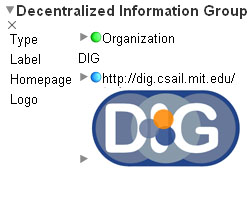
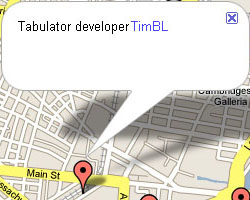
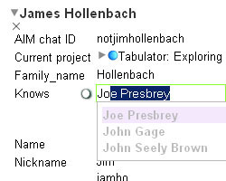

  
Tabulator is now hosted on addons.mozilla.org. If you download and install from there, it will provide automatic updates through the Firefox Addon Manager. But make sure you register on the site before downloading the extension (Since the extension is hosted in the "Addons Sandbox", it can only be downloaded by registered users).
Alternatively, you can download and install the latest release from below. Note that automatic updates will NOT be provided if you use the versions listed below.
This release includes the "FOAF Pane" which lets you explore friends listed on your FOAF file and the instructions on how to create a "Web ID". It is also possible to create your FOAF file with some seed FOAF data on any WebDAV editable space, and add details later on.
For more information on the background on this work please refer to the position paper Decentralization : The Future of Social Networking.
Note: Make sure you turn on "Tools -> Data Browser -> Make Firefox RDF" upon installing the Firefox Extension. This is required because the FOAF ontology is not loaded if the accept header is not set to request RDF, and some labels will not be displayed properly.
(SVN revision level: 25295)This release includes a hack to fix Tabulator caching. Now it is possible to reload the changes to an RDF document by clicking the Reload/Refresh button on the Firefox toolbar. Earlier you'd have to restart Firefox to see the changes you made.
This version also includes an embryonic version of an application which provides Polciy Based Access Control for tagging photos.
(SVN revision level: 24812)This is yet another quick bug fix release to support Firefox 3.0.1. The functionalities of Tabulator are
not any different than the previous release. The change is only in the install.rdf, where it involves the max
Firefox version to be upgraded to 3.0.* from 3.0.0.*.
This is a quick bug fix release to support Firefox 3.0. See the corresponding tabulator issue for more information.
(SVN revision level: 24790)This release includes the following features:
A quick release to get out important enhancement, about HTTP 303:
This release is still very alpha. While the old features may be more stable, new ones have been added, which will be less stable. But that's more fun, right? This release:
An alpha version of the Tabulator Extension is stil available. This release is still in testing. The edit UI is generally usable, but still allows many edits that should not be allowed. All bugs should be filed under the Tabulator Issue Tracker. For general discussion, head to Tabulator Extension - ESW Wiki.
Alpha Release: Install the alpha release of the Tabulator Extension
The Tabulator Extension is an extension for Firefox that provides a human-readable interface for linked data. It is based on the on-line Tabulator, a web-based interface for browsing RDF. Using Tabulator's outline mode, query views, and back-end code, the Tabulator Extension integrates the browsing of linked data directly into the Firefox browser, making for a more natural and seamless experience when browsing linked data on the Web.
A primary goal of the Tabulator Extension is to explore how linked data could be displayed in the next generation of Web browsers. The extension aims to make linked data human-readable by taking a document and picking out the actual things that the document describes. The properties of these things are the displayed in a table, and then the links in that table can be followed to load more data about other things in other documents.
The Tabulator Extension was originally developed during Summer 2007 by the Tabulator Team. It is open source under the W3C Software License.
To install the extension, click the download link in the Releases section.
Once the extension file is downloaded, it should automatically install. After restarting Firefox, all documents served as application/rdf+xml and text/n3 will be automatically loaded in the extension's outline view. It may be necessary to disable other RDF-related extensions that could override the extension's capture of these documents.
A tutorial for the Tabulator Extension can be found here: Tabulator Extension Tutorial.